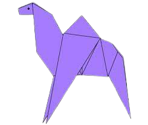
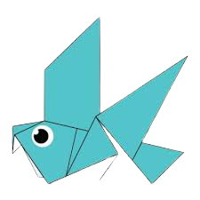
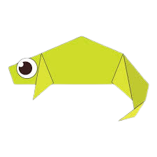
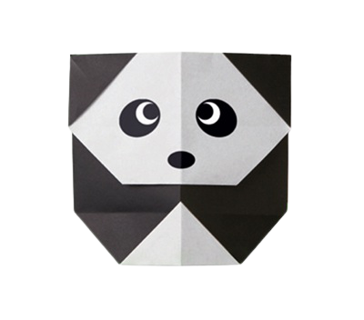
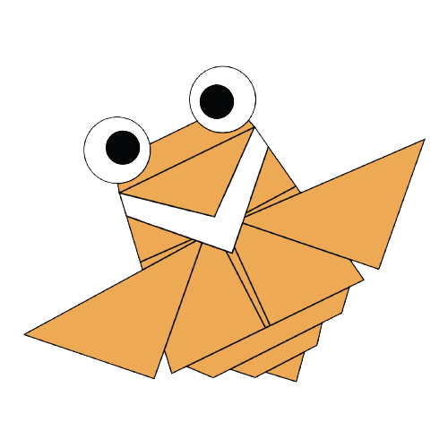
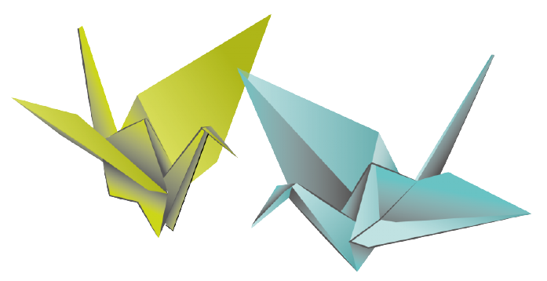
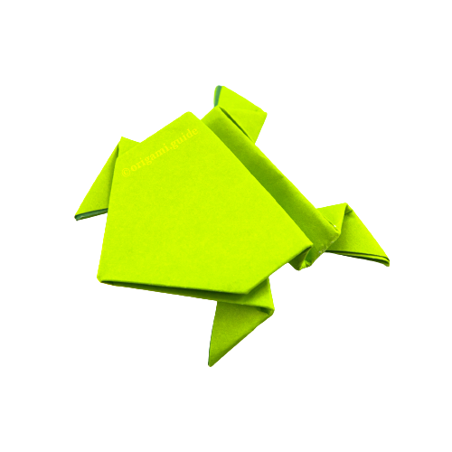

Interesting Facts About Camels:
- Camels have thick lips which let them forage for thorny plants other animals can't eat.
- Camels have three sets of eyelids and two rows of eyelashes to keep sand out of their eyes.
- There are two types of camels: One humped or “dromedary” camels and two humped Bactrian camels.

Interesting Facts About Pigeons:
- Pigeons are incredibly complex and intelligent animals
- Pigeons are renowned for their outstanding navigational abilities.
- Pigeons are highly sociable animals.

Interesting Facts About Chameleons:
- Their feet work like salad tongs
Their feet work like salad tongs
- Almost half of known species live in Madagaskar
- Skin crystles help them to change colour at will
Interesting Facts About Teddybear
- A teddybear was simultaneously by toymakers Morris Michtom in the U.S. and Richard Steiff under his aunt Margarete Steiff's company in Germany
- Teddy bears got their name from the story that Teddy Roosevelt refused to shoot a bear cub while on a hunting trip in 1902

Interesting Facts About Panda
- The giant panda, also known as the panda bear ,is a bear native to South Central China.
- It is characterised by its bold black-and-white coat and rotund body
- Giant pandas are good at climbing trees and can also swim

Interesting Facts About Cicada
- Cicadas live on all Continents except Antarctica
- They have one of the longest insect life spans
- Cicadas get their nutrients from trees

Interesting Facts About Crane
- Cranes are powerful flyers, with some having the ability to fly over the Himalayas.
- During migration cranes fly with their head and neck straight out and their feet and legs straight behind them.

Interesting Facts About Frog
- Many frogs can jump 20 times their own height
- Many frogs can jump 20 times their own height
- Croaking is used by male frogs as a way to attract females.